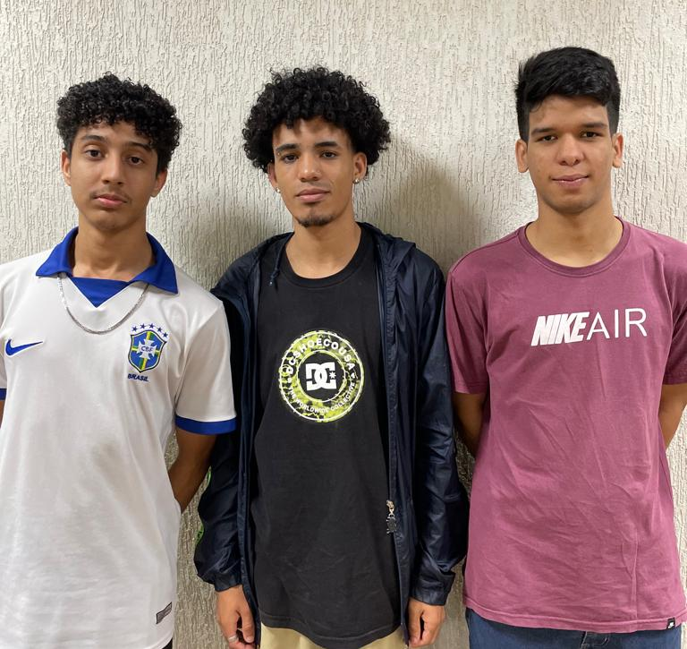

Proposta e necessidade

Projeto Integrador I é uma das disciplinas que compõem o curso Tecnologia em Sistemas Para a Internet (TSI) do Instituto Federal de Brasília, Campus Brasília. A proposta do Projeto Integrador I é aplicar os conhecimentos aprendidos em todas as outras disciplinas do primeiro semestre (Construção de Páginas para a Internet, Web Design, Redes de Computadores, Lógica de programação e Introdução a Arquitetura de Computadores) em um projeto prático, solucionando um problema real de um cliente, isto é, pessoa ou qualquer entidade que tenha uma necessidade que possa ser atendida através dos conhecimentos adquiridos pelos alunos ao longo do semestre. Para isso, foi formado um grupo nomeado de thinkbox composto por três alunos do primeiro semestre de TSI: Cauã Sena, Henrique Cardoso e Marcos Camargo. A proposta deste grupo era encontrar um cliente com uma necessidade e atender esta mesma com os conhecimentos de desenvolvimento de sistemas web dos integrantes do grupo.
Valdeneide Sena é uma pessoa que trabalha com terapias realizadas de forma totalmente remota e que precisava de um sistema de agendamento de sessões de terapias e de uma melhor ferramenta de divulgação do seu trabalho. A partir de sua necessidade, thinkbox propôs a cliente a criação de um website onde fosse possível divulgar seu trabalho de forma mais ampla e abrangente e permitir que as pessoas para as quais o site é voltado, ou seja, os possíveis clientes de Valdeneide, conseguissem agendar sessões de terapia.
Dessa forma, para serem avaliados pela disciplina de Projeto Integrador I, o grupo thinkbox iniciou o projeto Terapia TRG visando atender as necessidades da cliente Valdeneide Sena.
Projeto Integrador I é uma das disciplinas que compõem o curso Tecnologia em Sistemas Para a Internet (TSI) do Instituto Federal de Brasília, Campus Brasília. A proposta do Projeto Integrador I é aplicar os conhecimentos aprendidos em todas as outras disciplinas do primeiro semestre (Construção de Páginas para a Internet, Web Design, Redes de Computadores, Lógica de programação e Introdução a Arquitetura de Computadores) em um projeto prático, solucionando um problema real de um cliente, isto é, pessoa ou
qualquer entidade que tenha uma necessidade que possa ser atendida através dos conhecimentos adquiridos pelos alunos ao longo do semestre. Para isso, foi formado um grupo nomeado de thinkbox composto por três alunos do primeiro semestre de TSI: Cauã Sena, Henrique Cardoso e Marcos Camargo. A proposta deste grupo era encontrar um cliente com uma necessidade e atender esta mesma com os conhecimentos de desenvolvimento de sistemas web dos integrantes do grupo.
Valdeneide Sena é uma pessoa que trabalha com terapias realizadas de forma totalmente remota e que precisava de um sistema de agendamento de sessões de terapias e de uma melhor ferramenta de divulgação do seu trabalho. A partir de sua necessidade, thinkbox propôs a cliente a criação de um website onde fosse possível divulgar seu trabalho de forma mais ampla e abrangente e permitir que as pessoas para as quais o site é voltado, ou seja, os possíveis clientes de Valdeneide, conseguissem agendar sessões de terapia.
Dessa forma, para serem avaliados pela disciplina de Projeto Integrador I, o grupo thinkbox iniciou o projeto Terapia TRG visando atender as necessidades da cliente Valdeneide Sena.
O que foi feito?
Visando o objetivo final de atender a necessidade da cliente, foi gerada toda a identidade visual do grupo thinkbox, bem como a logo para representar o grupo e compor sua identidade visual; foi gerada toda a identidade visual da cliente (Valdeneide) atendendo os critérios exigidos por ela; foi feita toda a parte documental do projeto, bem como o cronograma de atividades; para melhorar a organização do projeto, evitar atrasos e ter uma visualização bastante intuitiva do andamento e da conclusão do projeto, foi desenvolvida uma página web para adicionar todas essas informações de forma simples e acessível para todos os integrantes do grupos; para ter uma ideia de como seria o site, foi desenvolvido um wireframe e depois um protótipo do site; após todas essas etapas concluídas e bem definidas, finalmente foi a hora de colocar a mão na massa e desenvolver o website da cliente, hospedá-lo e adicioná-lo aos mecanismos de buscas.
Para realizar todas essas atividades, utilizamos diversas ferramentas, estratégias, ideias, algumas que falharam e foram reformuladas, outras que deram super certo, contamos com a ajuda de softwares e claro, estudamos e nos dedicamos muito em cada disciplina e conceito estudado e visto durante o decorrer deste primeiro semestre do curso (TSI).
Metodologia
Para concluir todas essas atividades com êxito, tivemos que utilizar de algumas metodologias, isto é, boas práticas, ideias e estratégias visando concluir todo o projeto da forma mais rápida, eficiente e com o máximo de qualidade possível, dentro do limite dos nossos conhecimentos.
Dessa forma, primeiramente, uma das coisas mais importantes, o grupo mantinha, manteve e mantém contato constante, tanto fisicamente quanto remotamente. Isso facilitava a comunicação para desenvolver um bom trabalho em equipe, bem como agilizava o processo para concluir diversas tarefas que foram realizadas ao longo do projeto. Também, o projeto foi dividido em 22 etapas as quais foram distribuídas e redistribuídas (conforme haviam imprevistos ou mudávamos nossas estratégias) para cada integrante da equipe ou para mais de um integrante, se a tarefa demandava mais trabalho. Cada uma das 22 etapas tinha um prazo bem definido e para ser marcada como concluída necessitava (1) da aprovação de todos os integrantes do grupo e (2) da aprovação da cliente. Então, basicamente, a tarefa era feita e em seguida era enviada para aprovação dos outros integrantes do grupo, se algum integrante do grupo não gostasse de algo ou tivesse alguma outra sugestão que funcionasse melhor na atividade, a tarefa era refeita até que tivesse a aprovação de todos do grupo para, em seguida, ser enviada para aprovação da cliente, onde este processo se repetia até que fosse totalmente aprovada pela cliente; sempre buscando o máximo de aceitação por parte de todos os envolvidos nos processos. Para algumas etapas específicas, haviam metodologias específicas, que, em alguns momentos, conforme fosse necessário, essas metodologias poderiam mudar visando sempre rapidez, eficiência e qualidade no resultado final de cada etapa e no projeto como um todo.
Claro que para auxiliar em todo esse processo tanto de organização de todas as etapas e andamentos das mesmas ao longo do projeto e na realização de cada uma dessas etapas, foram utilizados diversos softwares e tecnologias. Como bancos de imagens gratuitas, imagens geradas, criadas e modificadas a partir de inteligências artificiais, Git, GitHub, Visual Studio Code, Canva, Figma, HTML, CSS, JavaScript, HandBrank, Gimp, planilhas, documentos, etc.
Usando essas metodologias, estratégias, mantendo boas práticas de código, boa comunicação entre os integrantes do grupo e utilizando softwares e tecnologias diversas para auxiliar no desenvolvimento de cada etapa, ao final, quando concluídas as 22 etapas, chegamos ao resultado final.